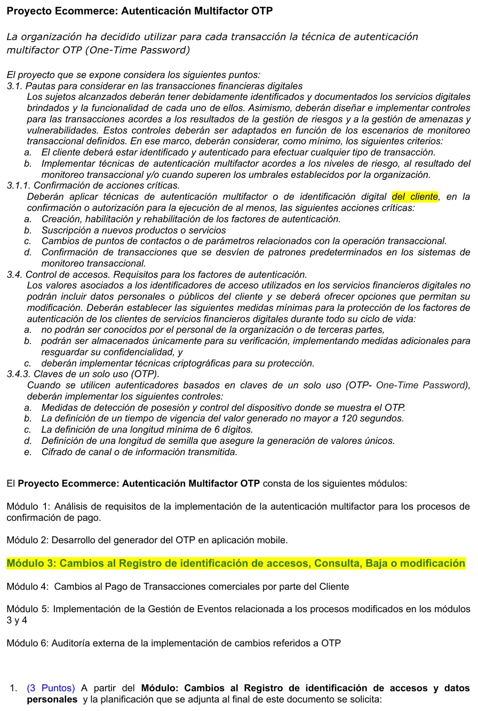
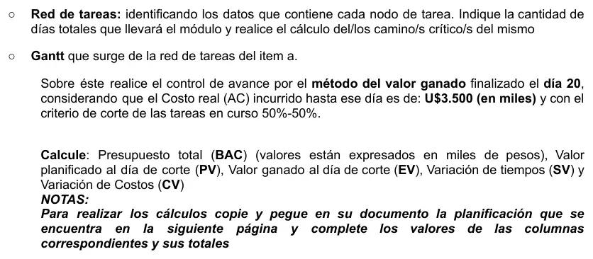
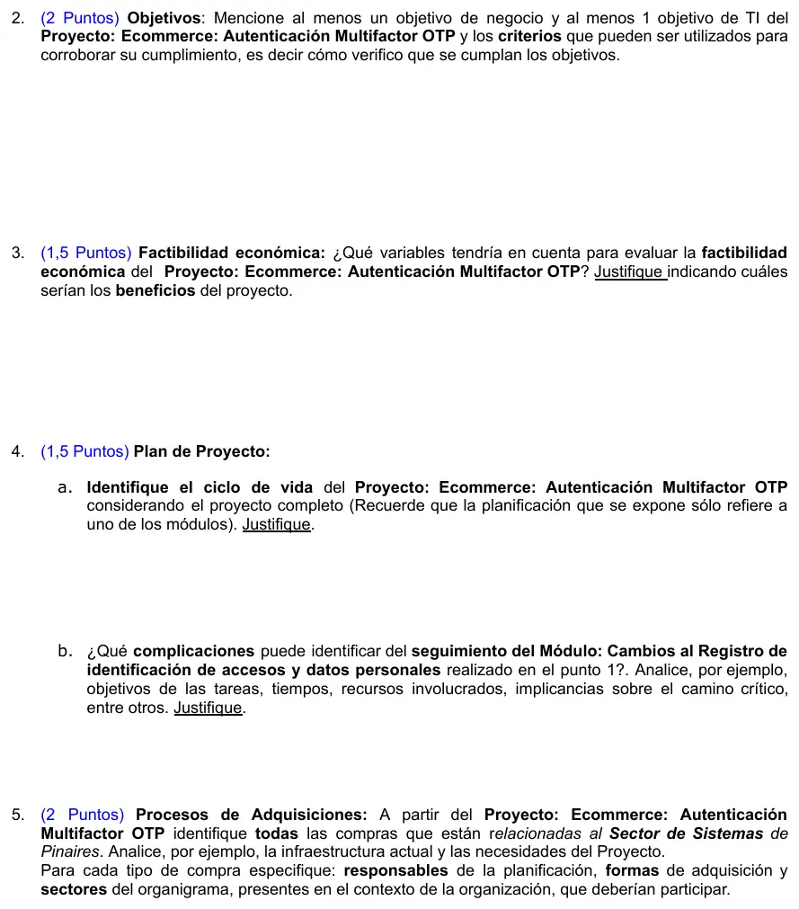
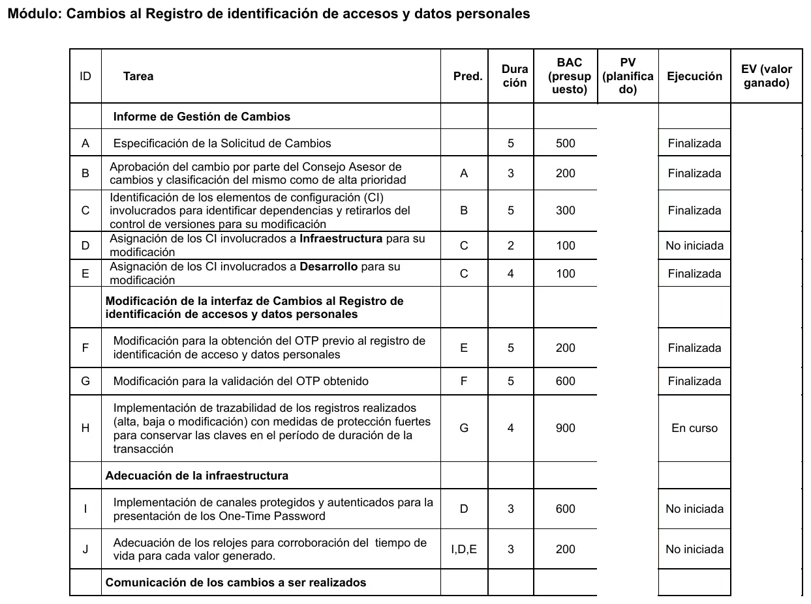
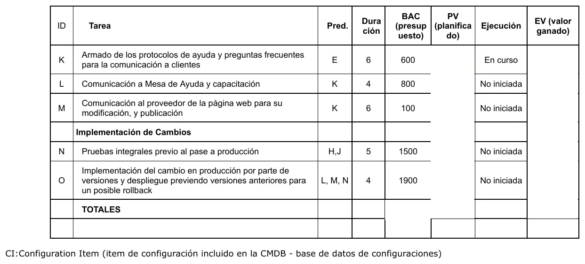

3° parcial, 2024
3° parcial, 2024
Enunciado










Propuesta de respuesta
Respuesta no verificada. La propuso Luta Studios con inteligencia artificial y ningún docente la revisó. Puede tener errores.
1. Red, Gantt y valor ganado
Las cuentas siguen las fórmulas del apunte, en base 1. Una tarea empieza el día siguiente al fin de su predecesora más tardía.
a) Red de tareas. Cada nodo lleva inicio temprano, duración y fin temprano arriba, la tarea en el medio, y abajo inicio tardío, holgura total, holgura libre y fin tardío. Tocá el dibujo para verlo en pantalla completa.
| Tarea | Pred. | Dur. | IT | FT | ITa | FTa | HT | HL |
|---|---|---|---|---|---|---|---|---|
| A | 5 | 1 | 5 | 1 | 5 | 0 | 0 | |
| B | A | 3 | 6 | 8 | 6 | 8 | 0 | 0 |
| C | B | 5 | 9 | 13 | 9 | 13 | 0 | 0 |
| D | C | 2 | 14 | 15 | 24 | 25 | 10 | 0 |
| E | C | 4 | 14 | 17 | 14 | 17 | 0 | 0 |
| F | E | 5 | 18 | 22 | 18 | 22 | 0 | 0 |
| G | F | 5 | 23 | 27 | 23 | 27 | 0 | 0 |
| H | G | 4 | 28 | 31 | 28 | 31 | 0 | 0 |
| I | D | 3 | 16 | 18 | 26 | 28 | 10 | 0 |
| J | I, D, E | 3 | 19 | 21 | 29 | 31 | 10 | 10 |
| K | E | 6 | 18 | 23 | 25 | 30 | 7 | 0 |
| L | K | 4 | 24 | 27 | 33 | 36 | 9 | 9 |
| M | K | 6 | 24 | 29 | 31 | 36 | 7 | 7 |
| N | H, J | 5 | 32 | 36 | 32 | 36 | 0 | 0 |
| O | L, M, N | 4 | 37 | 40 | 37 | 40 | 0 | 0 |
El módulo lleva 40 días. Hay un solo camino crítico, A, B, C, E, F, G, H, N, O, que suma 5 + 3 + 5 + 4 + 5 + 5 + 4 + 5 + 4 = 40. El que le sigue es A, B, C, E, K, M, O, con 33 días.
b) Gantt. La línea roja es el corte, al final del día 20. Tocá el dibujo para verlo en pantalla completa.
c) Valor ganado al día 20, con 50%-50%. El estado «según planificado» sale del Gantt. Es finalizada si y en curso si . El EV sale de la columna de ejecución que da el enunciado.
| Tarea | BAC | Según planificado | PV | Ejecución | EV |
|---|---|---|---|---|---|
| A | 500 | Finalizada | 500 | Finalizada | 500 |
| B | 200 | Finalizada | 200 | Finalizada | 200 |
| C | 300 | Finalizada | 300 | Finalizada | 300 |
| D | 100 | Finalizada | 100 | No iniciada | 0 |
| E | 100 | Finalizada | 100 | Finalizada | 100 |
| F | 200 | En curso | 100 | Finalizada | 200 |
| G | 600 | No iniciada | 0 | Finalizada | 600 |
| H | 900 | No iniciada | 0 | En curso | 450 |
| I | 600 | Finalizada | 600 | No iniciada | 0 |
| J | 200 | En curso | 100 | No iniciada | 0 |
| K | 600 | En curso | 300 | En curso | 300 |
| L | 800 | No iniciada | 0 | No iniciada | 0 |
| M | 100 | No iniciada | 0 | No iniciada | 0 |
| N | 1.500 | No iniciada | 0 | No iniciada | 0 |
| O | 1.900 | No iniciada | 0 | No iniciada | 0 |
| Totales | 8.600 | 2.300 | 2.650 |
Con positivo () el módulo va adelantado, porque se hizo trabajo por 350 más de lo que decía el plan. Con negativo () es ineficiente, porque gastó 850 más de lo que vale lo hecho. Los valores están en miles.
2. Objetivos
| Tipo | Objetivo | Cómo se verifica |
|---|---|---|
| Negocio | Bajar un 80 % los contracargos por compras online fraudulentas en los 6 meses siguientes a la puesta en producción | Comparar la cantidad y el monto de contracargos por mes, antes y después, con los reportes del procesador de pagos |
| Negocio | Que el 95 % de las compras online confirmadas con OTP terminen sin abandono durante el primer trimestre | Tasa de compras finalizadas sobre compras que pidieron OTP, del registro de transacciones |
| TI | Pedir OTP en el 100 % de las acciones críticas de la pauta 3.1.1 (alta de factores, nuevos productos, cambio de datos de contacto y transacciones fuera de patrón) antes del cierre del proyecto | Pruebas de aceptación por cada acción crítica y logs que muestren la validación del OTP en cada una |
| TI | Cumplir los controles de la pauta 3.4.3 en el generador mobile, con vigencia de hasta 120 segundos, al menos 6 dígitos y canal cifrado | Revisión de la configuración, pruebas de vencimiento y el informe de la auditoría externa del módulo 6 |
3. Factibilidad económica
Las variables que miraría:
- Inversión. Desarrollo del generador mobile (módulo 2) y de los cambios a registro y pagos (módulos 3 y 4), infraestructura para el validador, licencias, capacitación de la mesa de ayuda y la auditoría externa (módulo 6).
- Costos de operación. Soporte a usuarios por problemas con el OTP, mantenimiento de la app, monitoreo de eventos (módulo 5).
- Beneficios, que son ingresos más costos evitados. Entre los costos evitados están menos fraudes y contracargos, menos reclamos y horas de atención por compras desconocidas, y cumplir las pautas para transacciones digitales sin exponerse a sanciones. Del lado de los ingresos, más confianza del cliente en la tienda online, que se traduce en más ventas.
- Momento y riesgo. Los beneficios llegan después de la puesta en producción y van creciendo. Por eso conviene medir con VAN y TIR, que consideran el momento del dinero, con una tasa de costo de capital más un porcentaje de riesgo. El tiempo de recuperación sirve como dato rápido, pero no mira lo que pasa después.
Conviene si o si la TIR supera la tasa de la empresa.
4. Plan de proyecto
a) Ciclo de vida. Iterativo e incremental. El proyecto está partido en seis módulos que se pueden entregar por partes. El análisis de requisitos (módulo 1) va primero, después cada módulo (generador, registro, pagos) se construye, se prueba y pasa a producción por separado, como muestra el módulo 3, que tiene su propio pase con posibilidad de rollback. La gestión de eventos (módulo 5) necesita que estén terminados el 3 y el 4, y la auditoría (módulo 6) cierra sobre todo lo implementado. Una cascada pura obligaría a esperar todo el desarrollo para probar la autenticación con clientes reales.
b) Complicaciones del seguimiento del módulo.
- La ejecución no sigue el orden del plan. Al día 20, G está terminada y H en curso, aunque el plan las ubicaba entre los días 23 y 31. En cambio D e I, que debían estar terminadas, no empezaron. El valor ganado da adelantado en tiempo, pero lo adelantado es el camino crítico y lo atrasado tiene holgura.
- Holguras que se consumen. D, I y J tienen holgura total 10. Si D no arranca antes del día 24 (su inicio tardío), pasa a ser crítica y empuja a J y a N. J depende también de I, que tampoco empezó.
- Mucho camino crítico. 9 de las 15 tareas son críticas, así que cualquier demora en ellas corre la fecha final de 40 días.
- Costo. CV de −850 con solo el 31 % del presupuesto ganado (). Lo más caro está al final, en N y O (3.400 de 8.600), y si sigue la misma eficiencia no alcanza el presupuesto.
- Recursos compartidos. Las tareas tocan a Infraestructura, Desarrollo, la mesa de ayuda y un proveedor externo de la página web, que no dependen del mismo responsable.
- Unidades. El enunciado dice que el BAC está en miles de pesos y el AC en U$ (en miles). Para comparar tienen que estar en la misma moneda.
5. Adquisiciones
| Compra | Responsables de la planificación | Forma de adquisición | Sectores que participan |
|---|---|---|---|
| Servicio de envío o validación de OTP (si se usa un proveedor externo) | Gerente de Sistemas con Compras | Subcontratación por RFP, con contrato de servicio y SLA | Sistemas, Compras, Legales, Seguridad de la información |
| Infraestructura para el validador y los nuevos registros (servidores o capacidad en la nube) | Responsable de Infraestructura | Compra, leasing o alquiler de capacidad en la nube, comparando TCO | Sistemas (Infraestructura), Compras, Finanzas |
| Licencias de librerías criptográficas o de herramientas de desarrollo y pruebas mobile | Líder de Desarrollo | Compra rutinaria si es de catálogo, o licencia anual | Sistemas (Desarrollo), Compras |
| Dispositivos de prueba (celulares de distintas marcas y sistemas) | Líder de Desarrollo | Compra rutinaria | Sistemas, Compras |
| Herramienta de monitoreo de eventos (módulo 5) | Responsable de Infraestructura | Licitación o RFP, según el monto | Sistemas, Compras, Finanzas |
| Modificación y publicación de la página web (tarea M) | Gerente de Sistemas con el área comercial | Subcontratación al proveedor actual de la web | Sistemas, Comercial o Marketing, Compras |
| Auditoría externa (módulo 6) | Gerencia General con el Gerente de Sistemas | Subcontratación de servicios profesionales por RFP | Gerencia, Sistemas, Legales, Compras |
Antes del llamado conviene un RFI para conocer el mercado, y en la evaluación separar requisitos de diferenciadores con una matriz de ponderación. La infraestructura actual define cuánto hay que comprar. Si el sitio ya corre en la nube, alcanza con ampliar la capacidad.
Respuesta no verificada. Puede tener errores.
Se armó con Las fórmulas del nodo y del camino crítico del apunte de Gestión del Tiempo (página 24), los pasos del ejercicio «Método del valor ganado» y la sección de valor ganado del 3° parcial. Para objetivos, factibilidad, ciclo de vida y adquisiciones, las secciones del 3° parcial con esos nombres.
Quedó en duda: La red se calculó en base 1, como el apunte. Si se cuenta desde 0 y el corte cae al final del día 21, J pasa a finalizada según el plan, el PV da 2.400 y el SV, 250, sin cambiar la conclusión. El enunciado pone el BAC en miles de pesos y el AC en U$ (en miles), y se tomaron en la misma unidad. El contexto de Pinaires no está en la materia, así que los sectores, los responsables y la infraestructura actual son supuestos. Los porcentajes de los objetivos son de ejemplo.
¿Cómo te fue?
Marcá cada tema del examen.
- Red de tareas3° parcial
- Valor ganadoControl: valor ganado, en 3° parcial
- ObjetivosObjetivos, en 1° parcial
- FactibilidadCómo viene el examen, en 3° parcial
- AdquisicionesAdquisiciones, en Aprobación directa